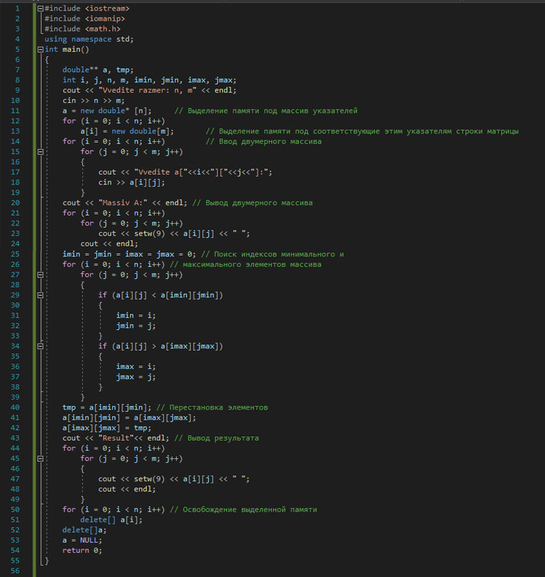

Для всех переменных выделяются участки памяти размером, соответствующим типу переменной. Программист имеет возможность работать непосредственно с адресами, для чего определен соответствующий тип данных - указатель. Указатель имеет следующий формат:
тип *имя_указателя;
Например:
int *a;
double *b , *d;
char*c Знак «звездочка» относится к имени указателя. Значение указателя соответствует первому байту участка памяти, на который он ссылается. На один и тот же участок памяти может ссылаться любое число указателей.
В языке С существует три вида указателей:
Например: int *ptr;
Например: void *vptr;
Например: void(*func)(int);
*func указатель на функцию, принимающей аргумент int и не возвращающей никаких значений.
К указателям можно применять две унитарные операции:
Указатель получает адрес переменной. Данная операция применима к переменным, под которые выделен соответствующий участок памяти.
Например:
int *ptr, var=1; // ptr -указатель, var - переменная
ptr = &var; // В ptr заносится адрес var Предназначена для доступа к значению, расположенному по данному адресу.
Например:
*ptr = 9; IIВ ячейку памяти, с адресом ptr записывается значение 9
var = *ptr; // Переменной var присваивается значение,расположенное по адресу ptr Над указателями можно выполнять арифметические операции сложения, инкремента (увеличения на 1), вычитания, декремента (уменьшения на 1) и операции сравнения. При выполнении арифметических операций с указателями автоматически учитывается размер данных, на которые он указывает.
Например:
ptr++; // Сдвиг указателя ptr на один элемент вперед
(*ptr)++; // (или ++*ptr;) Увеличение на 1 значения переменной, на которую указывает указатель ptr
*ptr = NULL; //Очистка указателя ptr Указатели, как правило, используются при работе с динамической памятью (heap или «куча»). Для работы с динамической памятью в языке С определены следующие функции: malloc, calloc, realloc и free
В языке C++ для выделения и освобождения памяти определены операции new и delete соответственно. Используют две формы операций:
delete указатель;- освобождение выделенной памяти.
delete []указатель;- освобождение выделенной памяти.
Примерработы с одномерным динамическим массивом:
int *а; // Объявление указателя а
а = new int[n]; // Выделение П блоков памяти целого типа
... // Работа с массивом а
delete [] а; // Освобождение выделенной памяти
Имя любого массива рассматривается компилятором как указатель на нулевой элемент массива.Так как имя двумерного динамического массива является указателем на указатель, то сначала выделятся память под указатели, а затем под соответствующие этим указателям строки.Освобождение выделенной памяти происходит в обратном порядке.
Написать программу перестановки минимального и максимального элементов двумерного массива размером NxM. Память для массива выделить динамически.
Код программы для решения данной задачи будет выглядеть следующим образом:
